01 — Problem
Juniors need real work; small brands need sharp design.
Two gaps that fit together: emerging designers and independent brands.
The collective I set up — junior-led, full-service, real clients. Already running the thing.
Two gaps that fit together: emerging designers and independent brands.
I set up sqrd and curated a fresh identity for 222 AVE. Every project shown here was solely made and directed by me.
Real briefs, delivered. A collective already in motion.
Curated women's fashion for the GCC's fashion-engaged, digitally fluent shopper - bridging fragmented access to niche and emerging designers through thoughtful curation and a brand-led approach. Curation over consumption. Quality over excess. Style with longevity.


Product Listing Page (PLP) layout exploration. The objective was to strip back the UI to create a stark, high-contrast grid. This minimalist architecture ensures the vibrant styling and distinctive silhouettes - drawing on the energetic, youthful aesthetic of labels like With Jéan - remain the primary focal point without visual competition.


Made to travel inside PR boxes - simple, embossed postcards designed for a quiet, luxurious feel in the hand. The logo design and the art direction of the imagery are both mine.
Empowering women to possess their bodies - Someri makes your body the statement. Minimalist designs and intentional fabrics highlight the female form with bold simplicity.


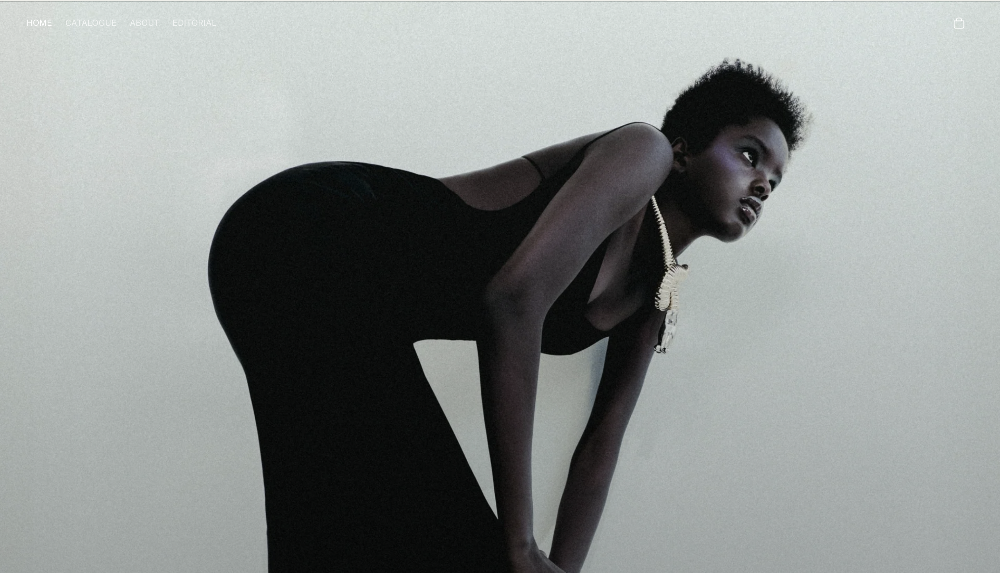
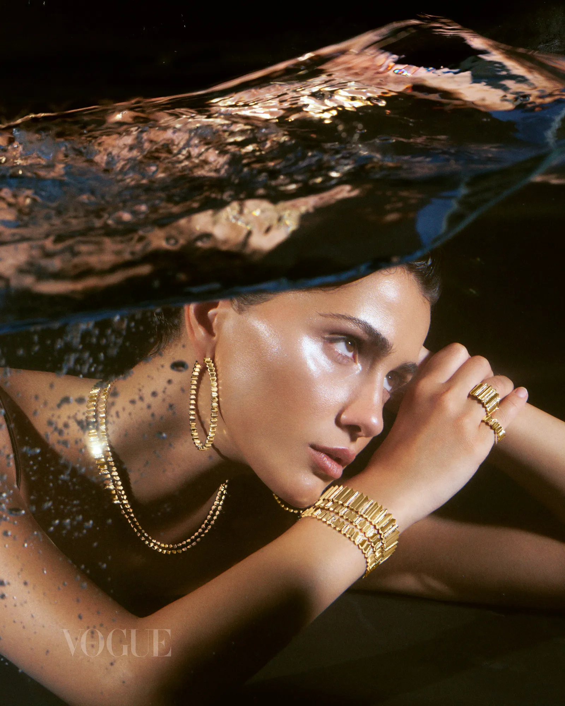
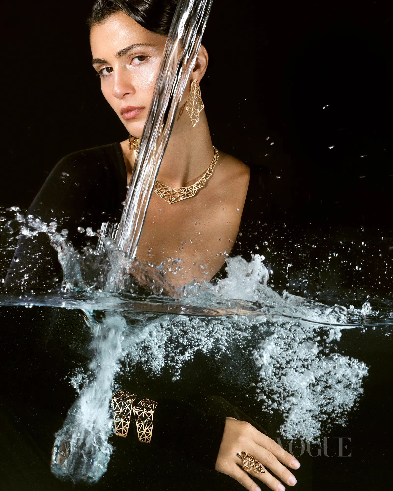
As seen in Vogue Arabia, where I worked as an assistant to the art director.

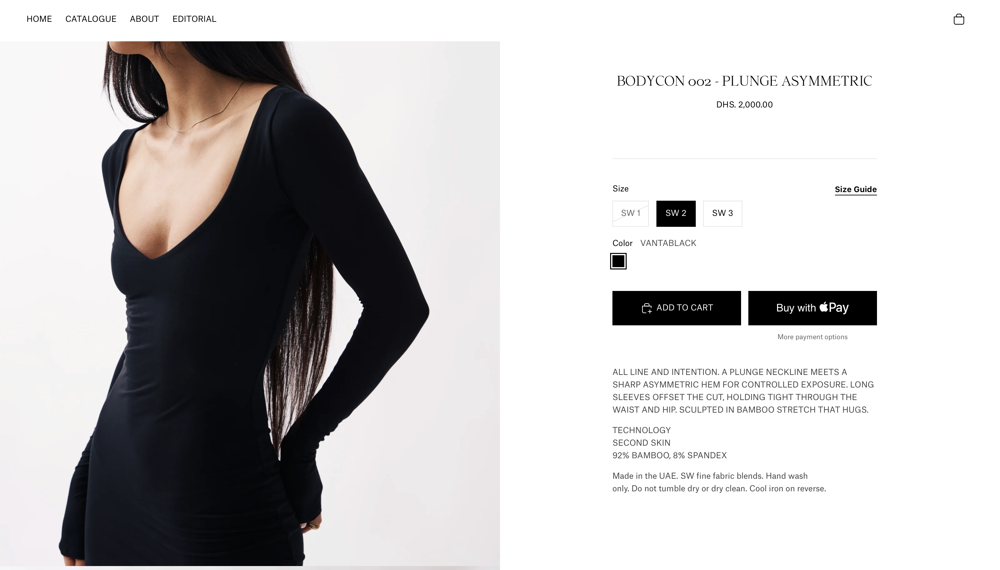
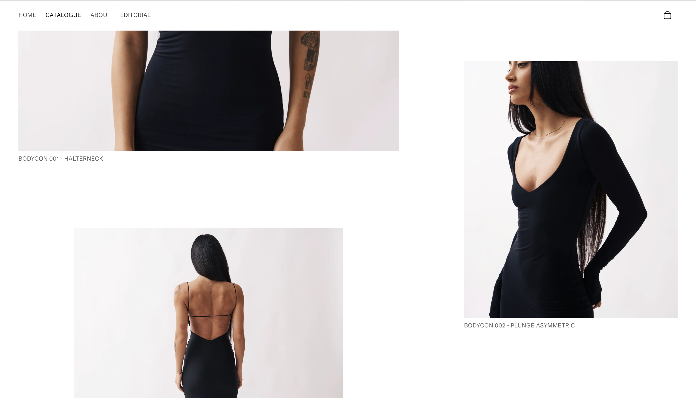
A London flower arrangement company, elegant and sophisticated yet fun and playful - the identity combines bold colour with graceful typography to capture both sides of the brand.


A skincare brand built around a system of smart, eczema-specific care designed to evolve with the user - blending clinically supported ingredients with accessible design, customisation tools and flexible subscriptions to reshape eczema care from the inside out. The identity reshapes how eczema skincare looks, moving it from scary and clinical to friendly and aesthetic.
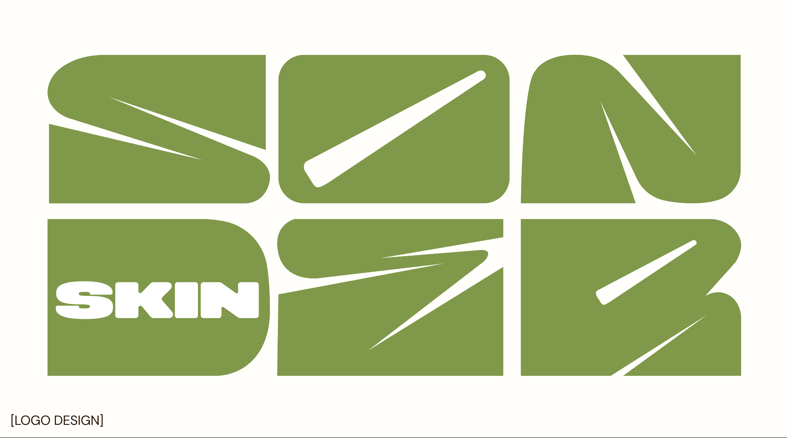
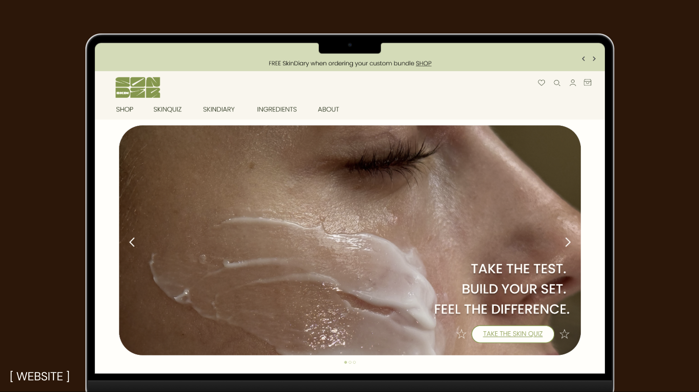
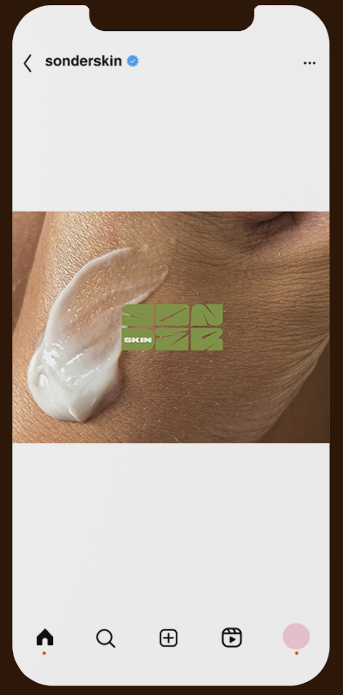
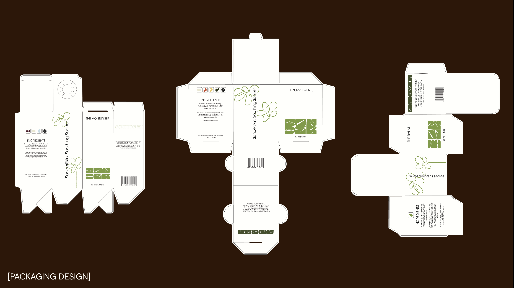
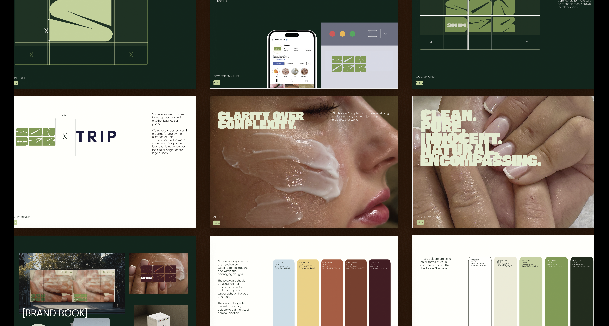
A Japanese grill company launching next year, taking a modern take on grill night - trading a clean, polished feel for something more relatable and lived-in. Secondary type and logo created by me.
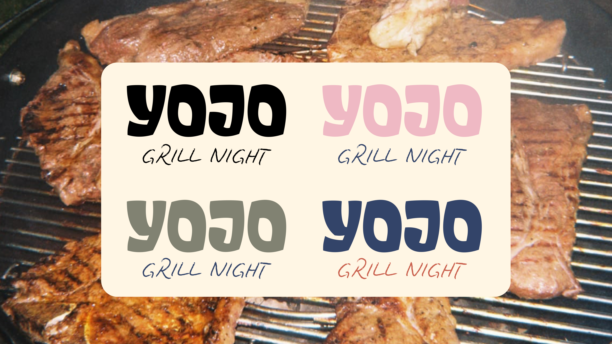
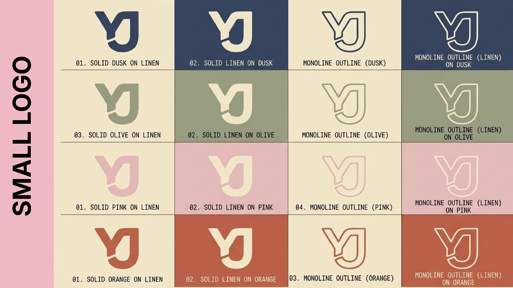
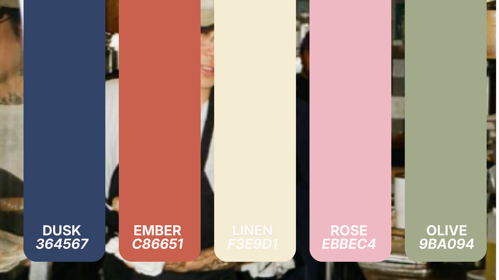
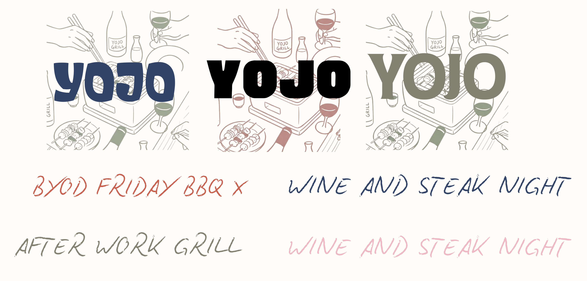
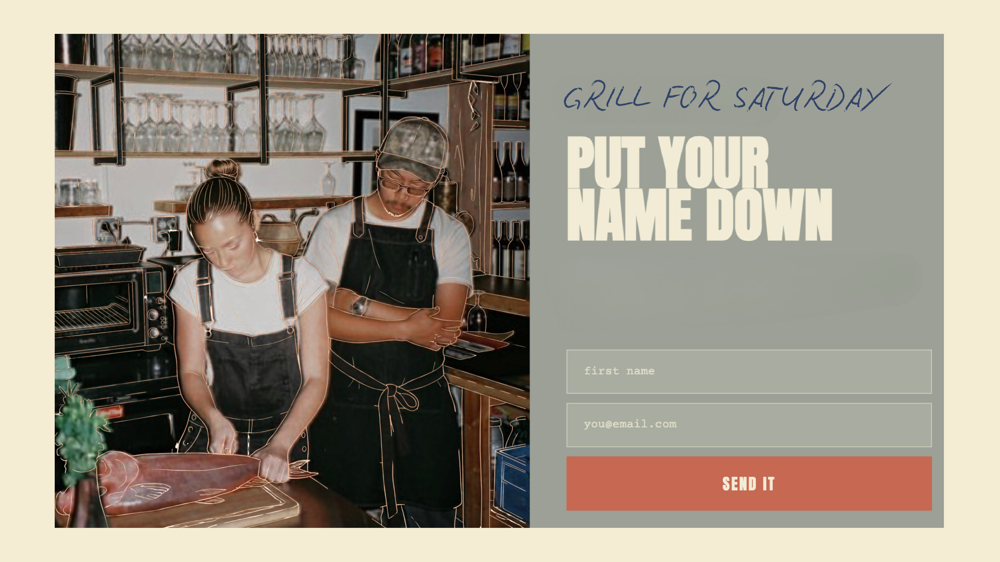
A brief that seeks to uncover deceptive practices, such as greenwashing, in the fashion industry - promoting awareness about transparency and encouraging consumers to consider the true nature of products by looking beyond the label.


The logo is the texture itself: a scan of the t-shirt I made, screen-printed with a hidden message under a layer of paint that turns transparent when wet, revealing "beyond the label" underneath. Wash it - greenwash it - again and again and the paint cracks further; that cracked surface became the mark. Commissioned by a fast fashion brand in Hampstead and used as the centrepiece of a talk on greenwashing.